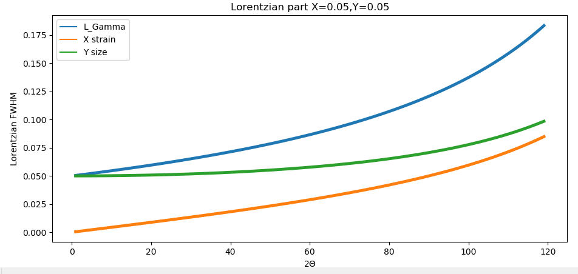
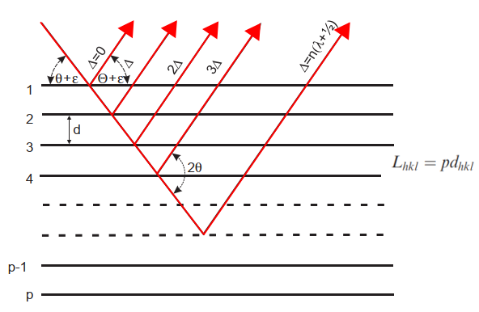

ESRF 2006 Time resolved in situ studies of
oxygen intercalation into SrCoO2.5 performed by X-ray absorption
spectroscopy and neutron diffraction R. Le Toquin, W.
Paulus, A. Cousson, C. Prestipino, S. De Panfilis, C. Lamberti
ESRF 2010 EXAFS and XRD characterisation of palladium sorbents for high temperature mercury capture from fuel gas
S. Poulston, T.I. Hyde, H. Hamilton, O. Mathon, C. Prestipino, G. Sankar andA.W.J. Smith
Soleil 2022 Resolution of the cationic distribution in synthetic germanite by a combinatorial approach Paradis-Fortin, L.;
Lemoine, P.; Guilmeau, E.; Malaman, B.; Elkaïm, E.; Zitolo, A.;
Cordier, S.; Guélou, G.; Raveau, B.; Prestipino
ESRF 2022 A disordered synthetic mineral with ultralow thermal conductivity
K. Maji, P. Lemoine, A. Renaud, B. Zhang,X. Zhou, V. Carnevali, C.
Candolfi, B. Raveau, R. Al Rahal AI Orabi, M. Fornari,P. Vaqueiro, M.
Pasturel, C. Prestipino and E. Guilmeau
Articles with peer-review
(1)
Managutti, P. B.; Yu,
H.; Hernandez, O.; Prestipino, C.; Dorcet, V.; Wang, H.; Hansen, T. C.;
Bahout, M. Exsolution of Co-Fe Alloy Nanoparticles on the PrBaFeCoO
5+?
Layered Perovskite Monitored by Neutron Powder Diffraction and
Catalytic Effect on Dry Reforming of Methane.
ACS Applied
Materials and Interfaces 2023,
15
(19), 23040–23050.
https://doi.org/10.1021/acsami.2c22239.
(2)
Lappi, T. I.; Gayfulin,
Y. M.; Renaud, A.; Prestipino, C.; Lemoine, P.; Yanshole, V. V.;
Muravieva, V. K.; Cordier, S.; Naumov, N. G. From K6[Re6−xMoxS8(CN)5]
Solid Solution to Individual Cluster Complexes: Separation and
Investigation of [Re4Mo2S8(CN)6]N− and [Re3Mo3S8(CN)6]N− Heterometallic
Clusters.
Molecules 2023,
28
(15), 5875.
https://doi.org/10.3390/molecules28155875.
(3)
Hagiwara, T.; Suekuni,
K.; Lemoine, P.; Prestipino, C.; Elkaim, E.; Supka, A. R.; Al Rahal Al
Orabi, R.; Fornari, M.; Guilmeau, E.; Raveau, B.; Saito, H.;
Sauerschnig, P.; Ohta, M.; Kanemori, Y.; Ohtaki, M. Pseudobinary
Approach to the Discovery and Design of Copper-Based Sulfides.
Chemistry
of Materials 2023.
https://doi.org/10.1021/acs.chemmater.3c01135.
(4)
Guy, G.; Szlawska, M.;
Prestipino, C.; Dorcet, V.; Demange, V.; Fertey, P.; Kaczorowski, D.;
Pasturel, M.; Pikul, A. New Insights into the Crystal Structure of UTE
0.25Ge
2
= U
4TGe
8 (TE = Ru, Os)
and Ferromagnetic Properties of the Os-Bearing Uranium Germanide.
Journal
of Solid State Chemistry 2023,
319.
https://doi.org/10.1016/j.jssc.2022.123795.
(5)
Pavan Kumar, V.;
Passuti, S.; Zhang, B.; Fujii, S.; Yoshizawa, K.; Boullay, P.; Le
Tonquesse, S.; Prestipino, C.; Raveau, B.; Lemoine, P.; Paecklar, A.;
Barrier, N.; Zhou, X.; Yoshiya, M.; Suekuni, K.; Guilmeau, E.
Engineering Transport Properties in Interconnected Enargite‐Stannite
Type Cu2+xMn1−xGeS4 Nanocomposites.
Angewandte Chemie
2022,
134 (49).
https://doi.org/10.1002/ange.202210600.
(6)
Paradis-Fortin, L.;
Lemoine, P.; Guilmeau, E.; Malaman, B.; Elkaïm, E.; Zitolo, A.;
Cordier, S.; Guélou, G.; Raveau, B.; Prestipino, C. Resolution of the
Cationic Distribution in Synthetic Germanite Cu
22Fe
8Ge
4S
32by
an Experimental Combinatorial Approach Based on Synchrotron Resonant
Powder Diffraction Data: A Case Study and Guidelines for Analogous
Compounds.
Chemistry of Materials 2022,
34 (16), 7434–7445.
https://doi.org/10.1021/acs.chemmater.2c01561.
(7)
Maji, K.; Lemoine, P.;
Renaud, A.; Zhang, B.; Zhou, X.; Carnevali, V.; Candolfi, C.; Raveau,
B.; Al Rahal Al Orabi, R.; Fornari, M.; Vaqueiro, P.; Pasturel, M.;
Prestipino, C.; Guilmeau, E. A Tunable Structural Family with Ultralow
Thermal Conductivity: Copper-Deficient Cu
1-xa
xPb
1-xBi
1+
xS
3.
Journal of the
American Chemical Society 2022,
144
(4), 1846–1860.
https://doi.org/10.1021/jacs.1c11998.
(8)
Rabbani, M. W.; Bonino,
V.; Spessa, L.; Agostino, A.; De Leo, N.; Prestipino, C.; Truccato, M.
Mapping of Structural Changes Induced by X-Ray Nanopatterning via
Nano-X-Ray Diffraction and Corresponding Electrical Effects.
Crystal
Growth and Design 2021,
21
(6), 3299–3309.
https://doi.org/10.1021/acs.cgd.1c00055.
(9)
Pavan Kumar, V.;
Lemoine, P.; Carnevali, V.; Guélou, G.; Lebedev, O. I.; Boullay, P.;
Raveau, B.; Al Rahal Al Orabi, R.; Fornari, M.; Prestipino, C.; Menut,
D.; Candolfi, C.; Malaman, B.; Juraszek, J.; Guilmeau, E. Ordered
Sphalerite Derivative Cu
5Sn
2S
7:
A Degenerate Semiconductor with High Carrier Mobility in the Cu-Sn-S
Diagram.
Journal of Materials Chemistry A 2021,
9 (17), 10812–10826.
https://doi.org/10.1039/d1ta01615f.
(10)
Managutti, P. B.;
Tymen, S.; Liu, X.; Hernandez, O.; Prestipino, C.; Le Gal La Salle, A.;
Paul, S.; Jalowiecki-Duhamel, L.; Dorcet, V.; Billard, A.; Briois, P.;
Bahout, M. Exsolution of Ni Nanoparticles from A-Site-Deficient Layered
Double Perovskites for Dry Reforming of Methane and as an Anode
Material for a Solid Oxide Fuel Cell.
ACS Applied Materials
and Interfaces 2021,
13
(30), 35719–35728.
https://doi.org/10.1021/acsami.1c08158.
(11)
Kumar, V. P.; Lemoine,
P.; Carnevali, V.; Guélou, G.; Lebedev, O. I.; Raveau, B.; Al Rahal Al
Orabi, R.; Fornari, M.; Candolfi, C.; Prestipino, C.; Menut, D.;
Malaman, B.; Juraszek, J.; Suekuni, K.; Guilmeau, E.
Local-Disorder-Induced Low Thermal Conductivity in Degenerate
Semiconductor Cu
22Sn
10S
32.
Inorganic Chemistry 2021,
60
(21), 16273–16285.
https://doi.org/10.1021/acs.inorgchem.1c02105.
(12)
Guélou, G.; Pavan
Kumar, V.; Carnevali, V.; Lebedev, O. I.; Raveau, B.; Couder, C.;
Prestipino, C.; Lemoine, P.; Malaman, B.; Juraszek, J.; Candolfi, C.;
Lenoir, B.; Al Rahal Al Orabi, R.; Fornari, M.; Guilmeau, E. Long-Range
Cationic Order Collapse Triggered by S/Cl Mixed-Anion Occupancy Yields
Enhanced Thermoelectric Properties in Cu
5Sn
2S
7.
Chemistry of Materials 2021,
33
(23), 9425–9438.
https://doi.org/10.1021/acs.chemmater.1c03434.
(13)
Paradis-Fortin, L.;
Lemoine, P.; Prestipino, C.; Kumar, V. P.; Raveau, B.; Nassif, V.;
Cordier, S.; Guilmeau, E. Time-Resolved in Situ Neutron Diffraction
Study of Cu
22Fe
8Ge
4S
32
Germanite: A Guide for the Synthesis of Complex Chalcogenides.
Chemistry
of Materials 2020,
32
(20), 8993–9000.
https://doi.org/10.1021/acs.chemmater.0c03219.
(14)
Paradis-Fortin, L.;
Guélou, G.; Pavan Kumar, V.; Lemoine, P.; Prestipino, C.;
Merdrignac-Conanec, O.; Durand, G. R.; Cordier, S.; Lebedev, O. I.;
Guilmeau, E. Structure, Microstructure and Thermoelectric Properties of
Germanite-Type Cu22Fe8Ge4S32 Compounds.
Journal of Alloys and
Compounds 2020,
831,
154767.
https://doi.org/10.1016/j.jallcom.2020.154767.
(15)
Le Tonquesse, S.;
Dorcet, V.; Joanny, L.; Demange, V.; Prestipino, C.; Guo, Q.;
Berthebaud, D.; Mori, T.; Pasturel, M. Mesostructure - Thermoelectric
Properties Relationships in V Mn1−Si1.74 (x = 0, 0.04) Higher Manganese
Silicides Prepared by Magnesiothermy.
Journal of Alloys and
Compounds 2020,
816,
152577.
https://doi.org/10.1016/j.jallcom.2019.152577.
(16)
Le Tonquesse, S.;
Joanny, L.; Guo, Q.; Elkaim, E.; Demange, V.; Berthebaud, D.; Mori, T.;
Pasturel, M.; Prestipino, C. Influence of Stoichiometry and Aging at
Operating Temperature on Thermoelectric Higher Manganese Silicides.
Chemistry
of Materials 2020,
32
(24), 10601–10609.
https://doi.org/10.1021/acs.chemmater.0c03714.
(17)
Le Tonquesse, S.;
Alleno, E.; Demange, V.; Prestipino, C.; Rouleau, O.; Pasturel, M.
Reaction Mechanism and Thermoelectric Properties of In0\times22Co4Sb12
Prepared by Magnesiothermy.
Materials Today Chemistry
2020,
16, 100223.
https://doi.org/10.1016/j.mtchem.2019.100223.
(18)
Bonino, V.; Torsello,
D.; Prestipino, C.; Mino, L.; Truccato, M. Time and Space Resolved
Modelling of the Heating Induced by Synchrotron X-Ray Nanobeams.
Journal
of Synchrotron Radiation 2020,
27
(Pt 6), 1662–1673.
https://doi.org/10.1107/S1600577520010553.
(19)
Ogier, T.; Prestipino,
C.; Figueroa, S.; Mauvy, F.; Mougin, J.; Grenier, J. C.; Demourgues,
A.; Bassat, J. M. In-Situ Study of Cationic Oxidation States in Pr
2NiO
4+?
Using X-Ray Absorption near-Edge Spectroscopy.
Chemical
Physics Letters 2019,
727,
116–120.
https://doi.org/10.1016/j.cplett.2019.04.034.
(20)
Nowacka, A.; Briantais,
P.; Prestipino, C.; Llabrés i Xamena, F. X. Selective Aerobic Oxidation
of Cumene to Cumene Hydroperoxide over Mono- and Bimetallic Trimesate
Metal-Organic Frameworks Prepared by a Facile ”green” Aqueous
Synthesis.
ACS Sustainable Chemistry & Engineering
2019,
7 (8), 7708–7715.
https://doi.org/10.1021/acssuschemeng.8b06472.
(21)
Nowacka, A.; Briantais,
P.; Prestipino, C.; Llabrés I Xamena, F. X. Facile ”green” Aqueous
Synthesis of Mono- And Bimetallic Trimesate Metal-Organic Frameworks.
Crystal
Growth and Design 2019,
19
(9), 4981–4989.
https://doi.org/10.1021/acs.cgd.9b00237.
(22)
Muravieva, V. K.;
Gayfulin, Y. M.; Prestipino, C.; Lemoine, P.; Ryzhikov, M. R.;
Yanshole, V. V.; Cordier, S.; Naumov, N. G. Tailoring Heterometallic
Cluster Functional Building Blocks: Synthesis, Separation, Structural
and DFT Studies of [Re6-xMoxSe8(CN)6]n.
Chemistry - A
European Journal 2019,
25
(66), 15040–15045.
https://doi.org/10.1002/chem.201903321.
(23)
Le Tonquesse, S.;
Pasturel, M.; Demange, V.; Tayal, A.; Solari, P. L.; Prestipino, C.
X-Ray Absorption Study on the Origin of the Deviation from Vegard’s Law
for U(Al1–xGex)3 Solid Solution.
Journal of Nuclear Materials
2019,
526, 151772.
https://doi.org/10.1016/j.jnucmat.2019.151772.
(24)
Le Tonquesse, S.;
Alleno, E.; Demange, V.; Dorcet, V.; Joanny, L.; Prestipino, C.;
Rouleau, O.; Pasturel, M. Innovative Synthesis of Mesostructured CoSb 3
-Based Skutterudites by Magnesioreduction.
Journal of Alloys
and Compounds 2019,
796,
176–184.
https://doi.org/10.1016/j.jallcom.2019.04.324.
(25)
Labégorre, J.; Virfeu,
A.; Bourhim, A.; Willeman, H.; Barbier, T.; Appert, F.; Juraszek, J.;
Malaman, B.; Huguenot, A.; Gautier, R.; Nassif, V.; Lemoine, P.;
Prestipino, C.; Elkaim, E.; Pautrot‐d’Alençon, L.; Le Mercier, T.;
Maignan, A.; Al Rahal Al Orabi, R.; Guilmeau, E. XBi4S7 (X = Mn, Fe):
New Cost‐Efficient Layered n‐Type Thermoelectric Sulfides with Ultralow
Thermal Conductivity.
Advanced Functional Materials
2019,
29 (48).
https://doi.org/10.1002/adfm.201904112.
(26)
Berthebaud, D.; mori,
takao; Pasturel, M.; Le Tonquesse, S.; Verastegui, Z.; Huynh, H.;
Dorcet, V.; Guo, Q.; Demange, V.; Prestipino, C. Magnesioreduction
Synthesis of Co-Doped Beta-FeSi2: Mechanism, Microstructure, and
Improved Thermoelectric Properties.
ACS Applied Energy
Materials 2019,
2
(12), 8525–8534.
https://doi.org/10.1021/acsaem.9b01426.
(27)
Barbosa, J.;
Prestipino, C.; Hernandez, O. J.; Paofai, S.; Dejoie, C.;
Guilloux-Viry, M.; Boulanger, C. In Situ Synchrotron Powder Diffraction
Study of Cd Intercalation into Chevrel Phases Crystal Structure and
Kinetic Effect.
Inorganic Chemistry 2019,
58 (3), 2158–2168.
https://doi.org/10.1021/acs.inorgchem.8b03259.
(29)
Chahal, R.; Starecki,
F.; Doualan, J.-L.; Němec, P.; Trapananti, A.; Prestipino, C.; Tricot,
G.; Boussard-Pledel, C.; Michel, K.; Braud, A.; Camy, P.; Adam, J.-L.;
Bureau, B.; Nazabal, V. Nd3+:Ga-Ge-Sb-S Glasses and Fibers for
Luminescence in Mid-IR: Synthesis, Structural Characterization and Rare
Earth Spectroscopy.
Optical Materials Express 2018,
8 (6), 1650.
https://doi.org/10.1364/ome.8.001650.
(30)
Bonino, V.; Agostino,
A.; Prestipino, C.; Hernandez, O.; Fretto, M.; Mino, L.; Truccato, M.
Structural and Functional Modifications Induced by X-Ray Nanopatterning
in Bi-2212 Single Crystals.
CrystEngComm 2018,
20 (42), 6667–6676.
https://doi.org/10.1039/c8ce01183d.
(31)
Takatsu, H.; Hernandez,
O.; Yoshimune, W.; Prestipino, C.; Yamamoto, T.; Tassel, C.; Kobayashi,
Y.; Batuk, D.; Shibata, Y.; Abakumov, A. M.; Brown, C. M.; Kageyama, H.
Cubic Lead Perovskite PbMoO3 with Anomalous Metallic Behavior.
Physical
Review B: Condensed Matter and Materials Physics 2017,
95 (15), 155105.
https://doi.org/10.1103/PhysRevB.95.155105.
(32)
Srinivasan, B.; Cui,
S.; Prestipino, C.; Gellé, A.; Boussard-Plédel, C.; Ababou-Girard, S.;
Trapananti, A.; Bureau, B.; Di Matteo, S. Possible Mechanism for Hole
Conductivity in Cu–As–Te Thermoelectric Glasses: A XANES and EXAFS
Study.
Journal of Physical Chemistry C 2017,
121 (26), 14045–14050.
https://doi.org/10.1021/acs.jpcc.7b04555.
(33)
Mino, L.; Bonino, V.;
Agostino, A.; Prestipino, C.; Borfecchia, E.; Lamberti, C.; Operti, L.;
Fretto, M.; De Leo, N.; Truccato, M. Maskless X-Ray Writing of
Electrical Devices on a Superconducting Oxide with Nanometer Resolution
and Online Process Monitoring.
Scientific Reports 2017,
7 (1), 9066.
https://doi.org/10.1038/s41598-017-09443-3.
(34)
Pethes, I.; Chahal, R.;
Nazabal, V.; Prestipino, C.; Trapananti, A.; Michalik, S.; Jóvári, P.
Chemical Short-Range Order in Selenide and Telluride Glasses.
The
Journal of Physical Chemistry B 2016,
120
(34), 9204–9214.
https://doi.org/10.1021/acs.jpcb.6b05996.
(36)
Broux, T.; Prestipino,
C.; Bahout, M.; Paofai, S.; Elkaim, E.; vibhu, vaibhav; Grenier, J.-C.;
Rougier, A.; Bassat, J.-Marc.; Hernandez, O. Structure and Reactivity
with Oxygen of Pr2NiO4+δ: An in Situ Synchrotron X-Ray Powder
Diffraction Study.
Dalton Transactions 2016,
45 (7), 3024–3033.
https://doi.org/10.1039/c5dt03482e.
(37)
Pethes, I.; Chahal, R.;
Nazabal, V.; Prestipino, C.; Trapananti, A.; Pantalei, C.; Beuneu, B.;
Bureau, B.; Jóvári, P. Short Range Order in Ge-Ga-Se Glasses.
Journal
of Alloys and Compounds 2015,
651,
578–584.
https://doi.org/10.1016/j.jallcom.2015.08.039.
(38)
Moog, I.; Feral-Martin,
C.; Duttine, M.; Wattiaux, A.; Prestipino, C.; Figueroa, S.; Majimel,
J.; Demourgues, A. Local Organization of Fe3+ into Nano-CeO2 with
Controlled Morphologies and Its Impact on Reducibility Properties.
Journal
of Materials Chemistry 2014,
2
(47), 20402–20414.
https://doi.org/10.1039/C4TA02631D.
(39)
Moog, I.; Prestipino,
C.; Figueroa, S.; Majimel, J.; Demourgues, A. Dual Ce
4+/Fe
3+
Redox Phenomena into Nanocrystalline Ce
1-xFe
xO
2-x/2
Solid Solution.
Journal of Physical Chemistry C 2014,
118 (39), 22746–22753.
https://doi.org/10.1021/jp505224v.
(40)
Kroner, A. B.; Newton,
M. A.; Tromp, M.; Roscioni, O. M.; Russell, A. E.; Dent, A. J.;
Prestipino, C.; Evans, J. Time-Resolved, In Situ DRIFTS/EDE/MS Studies
on Alumina-Supported Rhodium Catalysts: Effects of Ceriation and
Zirconiation on Rhodium-CO Interactions.
ChemPhysChem
2014,
15 (14), 3049–3059.
https://doi.org/10.1002/cphc.201402122.
(41)
Hanlon, J. M.; Tonus,
F.; Broux, T.; Prestipino, C.; Bahout, M. Redox Behaviour of Potential
SOFC Cathode Materials La1.6Sr0.4Ni1-xCoxO4+δ (x = 0.6 and 0.8)
Determined from in Situ Neutron Powder Diffraction under Flowing O2 and
5%H2.
Key Engineering Materials 2014,
617, 89–93.
https://doi.org/10.4028/www.scientific.net/KEM.617.89.
(42)
Broux, T.; Briand, M.;
Prestipino, C.; Hernandez, O.; Bahout, M. Structure and Reactivity of
the La
2-xSr
XMnO
4\pmδ
(0.7\le
X \le1.0) Solid Solutions in Oxidizing
Condition.
Key Engineering Materials 2014,
617, 98–101.
https://doi.org/10.4028/www.scientific.net/KEM.617.98.
(43)
Abel, J.; Majimel, M.;
Majimel, J.; Bellière-Baca, V.; Harlé, V.; André, G.; Prestipino, C.;
Figueroa, S.; Durand, E.; Demourgues, A. Oxygen Non-Stoichiometry
Phenomena in Pr1-xZrxO2-y Compounds (0.02 < x < 0.5).
Dalton
Transactions 2014,
43
(40), 15183–15191.
https://doi.org/10.1039/c4dt01545b.
(44)
Zalden, P.; Aquilanti,
G.; Prestipino, C.; Mathon, O.; André, B.; Coulet, M.-V. New Insights
on the Crystallization Process in Ge
15Sb
85
Phase Change Material: A Simultaneous Calorimetric and Quick-EXAFS
Measurement.
Journal of Non-Crystalline Solids 2013,
377, 30–33.
https://doi.org/10.1016/j.jnoncrysol.2013.01.005.
(45)
Mino, L.; Gianolio, D.;
Bardelli, F.; Prestipino, C.; Senthil Kumar, E.; Bellarmine, F.;
Ramanjaneyulu, M.; Lamberti, C.; Ramachandra Rao, M. S. EXAFS and XANES
Investigation of (Li, Ni) Codoped ZnO Thin Films Grown by Pulsed Laser
Deposition.
Journal of Physics Condensed Matter 2013,
25 (38).
https://doi.org/10.1088/0953-8984/25/38/385402.
(46)
Figueroa, S.; Gibson,
D.; Mairs, T.; Pasternak, S.; Newton, M.; Di Michiel, M.; Andrieux, J.;
Christoforidis, K.; Iglesias-Juez, A.; Fernández-García, M.;
Prestipino, C. Innovative Insights in a Plug Flow Microreactor for
Operando X-Ray Studies.
Journal of Applied Crystallography
2013,
46 (5), 1523–1527.
https://doi.org/10.1107/S0021889813018839.
(47)
Demont, A.; Prestipino,
C.; Hernandez, O.; Elkaïm, E.; Paofai, S.; Naumov, N.; Fontaine, B.;
Gautier, R.; Cordier, S. Unprecedented Electron-Poor Octahedral Ta
6
Clusters in a Solid-State Compound: Synthesis, Characterisations and
Theoretical Investigations of Cs
2BaTa
6Br
15O
3.
Chemistry - A European Journal 2013,
19 (38), 12711–12719.
https://doi.org/10.1002/chem.201300777.
(48)
Broux, T.; Prestipino,
C.; Bahout, M.; Hernandez, O.; Swain, D.; Paofai, S.; Hansen, T. C.;
Greaves, C. Unprecedented High Solubility of Oxygen Interstitial
Defects in La1.2Sr0.8MnO4+δ up to δ \sim 0.42 Revealed by In Situ High
Temperature Neutron Powder Diffraction in Flowing O2.
Chemistry
of Materials 2013,
25,
4053–4063.
https://doi.org/10.1021/cm402194q.
(49)
Zalden, P.; Aquilanti,
G.; Prestipino, C.; Mathon, O.; André, B.; Wuttig, M.; Coulet, M.-V.
Simultaneous Calorimetric and Quick-EXAFS Measurements to Study the
Crystallization Process in Phase-Change Materials.
Journal of
Synchrotron Radiation 2012,
19
(5), 806–813.
https://doi.org/10.1107/S090904951202612X.
(50)
Sura, R.; Ceretti, M.;
Prestipino, C.; Paulus, W.; Keller, L.; Conder, K.; Pomjakushina, E.;
Schefer, J. Effect of Strontium Doping on the Oxygen Diffusion in La
2–x Sr x CuO 4\pmδ Samples Investigated by Oxygen Isotope Back
Exchange.
Journal of Physics: Conference Series 2012,
340 (1), 012110.
https://doi.org/10.1088/1742-6596/340/1/012110.
(51)
Kilmartin, J.; Sarip,
R.; Grau-Crespo, R.; Di Tommaso, D.; Hogarth, G.; Prestipino, C.;
Sankar, G. Following the Creation of Active Gold Nanocatalysts from
Phosphine-Stabilized Molecular Clusters.
ACS Catalysis
2012,
2 (6), 957–963.
https://doi.org/10.1021/cs2006263.
(52)
Hernandez, O.; Paulus,
W.; Schefer, J.; Prestipino, C.; Le Dréau, L.; Vaughan, G.; Paofai, S.;
Perez-Mato, J. M.; Hosoya, S. Structural Modulation and Phase
Transitions in La2CoO4.14 Investigated by Synchrotron X-Ray and Neutron
Single-Crystal Diffraction.
Inorganic Chemistry 2012,
51 (18), 9789–9798.
https://doi.org/10.1021/ic301165a.
(53)
Bahout, M.; Tonus, F.;
Prestipino, C.; Pelloquin, D.; Hansen, T.; Fonda, E.; Battle, P. D.
High-Temperature Redox Chemistry of Pr0.5Sr1.5Cr0.5Mn0.5O4-Delta
Investigated in Situ by Neutron Diffraction and X-Ray Absorption
Spectroscopy under Reducing and Oxidizing Gas Flows.
Journal
of Materials Chemistry 2012,
22
(21), 10560–10570.
https://doi.org/10.1039/c2jm31448g.
(54)
Villesuzanne, A.;
Paulus, W.; Cousson, A.; Hosoya, S.; Le Dréau, L.; Hernandez, O.;
Prestipino, C.; Ikbel Houchati, M.; Schefer, J. On the Role of Lattice
Dynamics on Low-Temperature Oxygen Mobility in Solid Oxides: A Neutron
Diffraction and First-Principles Investigation of La(2)CuO(4+delta).
Journal
of Solid State Electrochemistry 2011,
15
(2), 357–366.
https://doi.org/10.1007/s10008-010-1274-7.
(55)
Skinner, S. J.; Packer,
R. J.; Bayliss, R. D.; Illy, B.; Prestipino, C.; Ryan, M. P. Redox
Chemistry of the Novel Fast Oxide Ion Conductor CeNbO
4 + d
Determined through an in-Situ Spectroscopic Technique.
Solid
State Ionics 2011,
192
(1), 659–663.
https://doi.org/10.1016/j.ssi.2009.12.008.
(56)
Prestipino, C.; Mathon,
O.; Hino, R.; Beteva, A.; Pascarelli, S. Quick-EXAFS Implementation on
the General Purpose EXAFS Beamline at ESRF.
Journal of
Synchrotron Radiation 2011,
18
(2), 176–182.
https://doi.org/10.1107/S0909049510046546.
(57)
Piovano, A.; Agostini,
G.; I. Frenkel, A.; Berthier, T.; Prestipino, C.; Ceretti, M.; Paulus,
W.; Lamberti, C. Time Resolved in Situ XAFS Study of the
Electrochemical Oxygen Intercalation in SrFeO2.5 Brownmillerite
Structure: Comparison with the Homologous SrCoO2.5 System.
Journal
of Physical Chemistry C 2011,
115
(4), 1311–1322.
https://doi.org/10.1021/jp107173b.
(58)
Delgado, M.; Santini,
C. C.; Delbecq, F.; Baudouin, A.; De Mallmann, A.; Prestipino, C.;
Norsic, S.; Sautet, P.; Basset, J.-M. Characterization of Surface
Hydride Hafnium Complexes on Alumina by a Combination of Experiments
and DFT Calculations.
Journal of Physical Chemistry C
2011,
115 (14), 6757–6763.
https://doi.org/10.1021/jp200111x.
(59)
Simmance, K.; Sankar,
G.; Bell, R. G.; Prestipino, C.; Beek, W. V. Tracking the Formation of
Cobalt Substituted ALPO-5 Using Simultaneous in Situ X-Ray Diffraction
and X-Ray Absorption Spectroscopy Techniques.
Physical
Chemistry Chemical Physics 2010,
12
(3), 559–562.
https://doi.org/10.1039/b920245e.
(60)
Poulston, S.; Hyde, T.
I.; Hamilton, H.; Mathon, O.; Prestipino, C.; Sankar, G.; Smith, A. W.
J. EXAFS and XRD Characterization of Palladium Sorbents for High
Temperature Mercury Capture from Fuel Gas.
Physical Chemistry
Chemical Physics 2010,
12
(2), 484–491.
https://doi.org/10.1039/b911941h.
(61)
Martínez, A.;
Spottorno, J.; Figueroa, A. I.; Bartolomé, F.; García, L. M.;
Prestipino, C.; Hernando, A.; Crespo, P. Direct Measurements of the
Correlation between Reentrant Ferromagnetism and Lattice Expansion in
FeCuZr Alloys.
Physical Review B - Condensed Matter and
Materials Physics 2010,
82
(1).
https://doi.org/10.1103/PhysRevB.82.012406.
(62)
Deprez, E.;
Muñoz-Márquez, M. A.; Roldán, M. A.; Prestipino, C.; Palomares, F. J.;
Minella, C. B.; Bösenberg, U.; Dornheim, M.; Bormann, R.; Fernández, A.
Oxidation State and Local Structure of Ti-Based Additives in the
Reactive Hydride Composite 2LiBH
4 + MgH
2.
Journal of Physical Chemistry C 2010,
114 (7), 3309–3317.
https://doi.org/10.1021/jp910955r.
(63)
Corma, A.; Iborra, S.;
Llabrés I Xamena, F. X.; Montón, R.; Calvino, J. J.; Prestipino, C.
Nanoparticles of Pd on Hybrid Polyoxometalate-Ionic Liquid Material:
Synthesis, Characterization, and Catalytic Activity for Heck Reaction.
Journal
of Physical Chemistry C 2010,
114
(19), 8828–8836.
https://doi.org/10.1021/jp1014934.
(64)
Guilera, G.; Gorges,
B.; Pascarelli, S.; Vitoux, H.; Newton, M. A.; Prestipino, C.; Nagai,
Y.; Hara, N. Novel High-Temperature Reactors for in Situ Studies of
Three-Way Catalysts Using Turbo-XAS.
Journal of Synchrotron
Radiation 2009,
16
(5), 628–634.
https://doi.org/10.1107/S0909049509026521.
(65)
Gianolio, D.; Groppo,
E.; Estephane, J.; Prestipino, C.; Nikitenko, S.; Zecchina, A.;
Bordiga, S.; Taoufik, M.; Quadrelli, E. A.; Basset, J. M.; Lamberti, C.
Formation and Reactivity of Cr
II Carbonyls
Hosted in Polar and Non Polar Supports.
Journal of Physics:
Conference Series 2009,
190.
https://doi.org/10.1088/1742-6596/190/1/012140.
(66)
Estephane, J.; Groppo,
E.; Damin, A.; Vitillo, J. G.; Gianolio, D.; Lamberti, C.; Bordiga, S.;
Prestipino, C.; Nikitenko, S.; Quadrelli, E. A.; Taouflk, M.; Basset,
J. M.; Zecchina, A. Structure and Enhanced Reactivity of Chromocene
Carbonyl Confined inside Cavities of NaY Zeolite.
Journal of
Physical Chemistry C 2009,
113
(17), 7305–7315.
https://doi.org/10.1021/jp811240m.
(67)
Corma, A.; Llabrés I
Xamena, F. X.; Prestipino, C.; Renz, M.; Valencia, S. Water Resistant,
Catalytically Active Nb and Ta Isolated Lewis Acid Sites, Homogeneously
Distributed by Direct Synthesis in a Beta Zeolite.
Journal of
Physical Chemistry C 2009,
113
(26), 11306–11315.
https://doi.org/10.1021/jp902375n.
(68)
Agostini, G.; Usseglio,
S.; Groppo, E.; Uddin, M. J.; Prestipino, C.; Bordiga, S.; Zecchina,
A.; Solari, P. L.; Lamberti, C. From Isolated Ag
+
Ions to Aggregated Ag
0 Nanoclusters in
Silver-Exchanged Engelhard Titanosilicate (ETS-10) Molecular Sieve:
Reversible Behavior.
Chemistry of Materials 2009,
21 (7), 1343–1353.
https://doi.org/10.1021/cm803216k.
(69)
Cesano, F.; Scarano,
D.; Bertarione, S.; Bonino, F.; Damin, A.; Bordiga, S.; Prestipino, C.;
Lamberti, C.; Zecchina, A. Synthesis of ZnO-Carbon Composites and
Imprinted Carbon by the Pyrolysis of ZnCl
2-Catalyzed
Furfuryl Alcohol Polymers.
Journal of Photochemistry and
Photobiology A: Chemistry 2008,
196
(2–3), 143–153.
https://doi.org/10.1016/j.jphotochem.2007.07.033.
(70)
Bonino, F.; Chavan, S.;
Vitillo, J. G.; Groppo, E.; Agostini, G.; Lamberti, C.; Dietzel, P. D.
C.; Prestipino, C.; Bordiga, S. Local Structure of CPO-27-Ni
Metallorganic Framework upon Dehydration and Coordination of NO.
Chemistry
of Materials 2008,
20
(15), 4957–4968.
https://doi.org/10.1021/cm800686k.
(71)
Szeto, K. C.;
Prestipino, C.; Lamberti, C.; Zecchina, A.; Bordiga, S.; Bj?rgen, M.;
Tilset, M.; Lillerud, K. F. Characterization of a New Porous
Pt-Containing Metal-Organic Framework Containing Potentially
Catalytically Active Sites: Local Electronic Structure at the Metal
Centers.
Chemistry of Materials 2007,
19 (2), 211–220.
https://doi.org/10.1021/cm0616432.
(72)
Regli, L.; Lamberti,
C.; Busco, C.; Zecchina, A.; Prestipino, C.; Lillerud, K. P.; Zones, S.
I.; Bordiga, S. Structural Incorporation of Carbon and Nitrogen into
B-SSZ-13: A Spectroscopic and Computational Studies.
Studies
in Surface Science and Catalysis 2007,
170
(A), 585–593.
https://doi.org/10.1016/S0167-2991(07)80894-9.
(73)
Regli, L.; Bordiga, S.;
Busco, C.; Prestipino, C.; Ugliengo, P.; Zecchina, A.; Lamberti, C.
Functionalization of Zeolitic Cavities: Grafting NH
2
Groups in Framework T Sites of B-SSZ-13 - A Way to Obtain Basic Solids
Catalysts?
Journal of the American Chemical Society
2007,
129 (40), 12131–12140.
https://doi.org/10.1021/ja0721770.
(74)
Hafizovic, J.; Bj?rgen,
M.; Olsbye, U.; Dietzel, P. D. C.; Bordiga, S.; Prestipino, C.;
Lamberti, C.; Lillerud, K. P. The Inconsistency in Adsorption
Properties and Powder XRD Data of MOF-5 Is Rationalized by Framework
Interpenetration and the Presence of Organic and Inorganic Species in
the Nanocavities.
Journal of the American Chemical Society
2007,
129 (12), 3612–3620.
https://doi.org/10.1021/ja0675447.
(75)
Agostini, G.; Groppo,
E.; Bordiga, S.; Zecchina, A.; Prestipino, C.; D’Acapito, F.; Van
Kimmenade, E.; Thüne, P. C.; Niemantsverdriet, J. W.; Lamberti, C.
Reactivity of Cr Species Grafted on SiO
2/Si(100)
Surface: A Reflection Extended X-Ray Absorption Fine Structure Study
down to the Submonolayer Regime.
Journal of Physical
Chemistry C 2007,
111
(44), 16437–16444.
https://doi.org/10.1021/jp074066t.
(76)
Szeto, K. C.; Lillerud,
K. P.; Tilset, M.; Bj?rgen, M.; Prestipino, C.; Zecchina, A.; Lamberti,
C.; Bordiga, S. A Thermally Stable Pt/Y-Based Metal-Organic Framework:
Exploring the Accessibility of the Metal Centers with Spectroscopic
Methods Using H
2O, CH
3OH,
and CH
3CN as Probes.
Journal of
Physical Chemistry B 2006,
110
(43), 21509–21520.
https://doi.org/10.1021/jp0634611.
(77)
Rotunno, F.;
Prestipino, C.; Bertarione, S.; Gruppo, E.; Scarano, D.; Zecchina, A.;
Pellegrini, R.; Leofanti, G.; Lamberti, C. Preparation of Pd/C
Catalysts: From the Pd-Precursor Solution to the Final Systems.
Studies
in Surface Science and Catalysis 2006,
162,
721–728.
https://doi.org/10.1016/S0167-2991(06)80973-0.
(78)
Prestipino, C.; Regli,
L.; Vitillo, J. G.; Bonino, F.; Damin, A.; Lamberti, C.; Zecchina, A.;
Solari, P. L.; Kongshaug, K. O.; Bordiga, S. Local Structure of
Framework Cu(II) in HKUST-1 Metallorganic Framework: Spectroscopic
Characterization upon Activation and Interaction with Adsorbates.
Chemistry
of Materials 2006,
18
(5), 1337–1346.
https://doi.org/10.1021/cm052191g.
(79)
Le Toquin, R.; Paulus,
W.; Cousson, A.; Prestipino, C.; Lamberti, C. Time-Resolved in Situ
Studies of Oxygen Intercalation into SrCoO
2.5,
Performed by Neutron Diffraction and X-Ray Absorption Spectroscopy.
Journal
of the American Chemical Society 2006,
128
(40), 13161–13174.
https://doi.org/10.1021/ja063207m.
(80)
Bertarione, S.;
Prestipino, C.; Groppo, E.; Scarano, D.; Spoto, G.; Zecchina, A.;
Pellegrini, R.; Leofanti, G.; Lamberti, C. Direct IR Observation of
Vibrational Properties of Carbonyl Species Formed on Pd Nano-Particles
Supported on Amorphous Carbon: Comparison with Pd/SiO
2-Al
2O
3.
Physical Chemistry Chemical Physics 2006,
8 (31), 3676–3681.
https://doi.org/10.1039/b606431k.
(81)
Truccato, M.; Lamberti,
C.; Prestipino, C.; Agostino, A. Evidence of Ion Diffusion at Room
Temperature in Microcrystals of the Bi
2Sr
2CaCu
2O
8+?
Superconductor.
Applied Physics Letters 2005,
86 (21), 1–3.
https://doi.org/10.1063/1.1938251.
(82)
Prestipino, C.; Solari,
P. L.; Lamberti, C. EXAFS and XANES Investigation of the ETS-10
Microporous Titanosilicate.
Journal of Physical Chemistry B
2005,
109 (27), 13132–13137.
https://doi.org/10.1021/jp050183h.
(83)
Prestipino, C.;
Capello, L.; D’Acapito, F.; Lamberti, C. Local Structure of [Cu
I(CO)
2]
+
Adducts Hosted inside ZSM-5 Zeolite Probed by EXAFS, XANES and IR
Spectroscopies.
Physical Chemistry Chemical Physics
2005,
7 (8), 1745–1746.
https://doi.org/10.1039/b500780a.
(84)
Groppo, E.; Prestipino,
C.; Cesano, F.; Bonino, F.; Bordiga, S.; Lamberti, C.; Thüne, P. C.;
Niemantsverdriet, J. W.; Zecchina, A. In Situ, Cr K-Edge XAS Study on
the Phillips Catalyst: Activation and Ethylene Polymerization.
Journal
of Catalysis 2005,
230
(1), 98–108.
https://doi.org/10.1016/j.jcat.2004.11.017.
(85)
Berlier, G.;
Prestipino, C.; Rivallan, M.; Bordiga, S.; Lamberti, C.; Zecchina, A.
Behavior of Extraframework Fe Sites in MFI and MCM-22 Zeolites upon
Interaction with N
2O and NO.
Journal
of Physical Chemistry B 2005,
109
(47), 22377–22385.
https://doi.org/10.1021/jp052210+.
(86)
Prestipino, C.; Bonino,
F.; Usseglio, S.; Damin, A.; Tasso, A.; Clerici, M. G.; Bordiga, S.;
D’Acapito, F.; Zecchina, A.; Lamberti, C. Equilibria between Peroxo and
Hydroperoxo Species in the Titanosilicates: An in Situ High-Resolution
XANES Investigation.
ChemPhysChem 2004,
5 (11), 1799–1804.
https://doi.org/10.1002/cphc.200400427.
(87)
Luches, P.; Groppo, E.;
D’Addato, S.; Lamberti, C.; Prestipino, C.; Valeri, S.; Boscherini, F.
NiO and MgO Ultrathin Films by Polarization Dependent XAS.
Surface
Science 2004,
566–568
(1-3 PART 1), 84–88.
https://doi.org/10.1016/j.susc.2004.05.026.
(88)
Luches, P.; D?addato,
S.; Valeri, S.; Groppo, E.; Prestipino, C.; Lamberti, C.; Boscherini,
F. X-Ray Absorption Study at the Mg and O K Edges of Ultrathin MgO
Epilayers on Ag(001).
Physical Review B - Condensed Matter
and Materials Physics 2004,
69
(4).
https://doi.org/10.1103/PhysRevB.69.045412.
(89)
Groppo, E.; Prestipino,
C.; Lamberti, C.; Carboni, R.; Boscherini, F.; Luches, P.; Valeri, S.;
D’Addato, S. O K-Edge x-Ray Absorption Study of Ultrathin NiO Epilayers
Deposited in Situ on Ag(001) [81].
Physical Review B -
Condensed Matter and Materials Physics 2004,
70 (16), 1–6.
https://doi.org/10.1103/PhysRevB.70.165408.
(90)
Bonino, F.; Damin, A.;
Ricchiardi, G.; Ricci, M.; Spanò, G.; D’Aloisio, R.; Zecchina, A.;
Lamberti, C.; Prestipino, C.; Bordiga, S. Ti-Peroxo Species in the
TS-1/H
2O
2/H
2O
System.
Journal of Physical Chemistry B 2004,
108 (11), 3573–3583.
https://doi.org/10.1021/jp036166e.
(91)
Zecchina, A.;
Bertarione, S.; Damin, A.; Scarano, D.; Lamberti, C.; Prestipino, C.;
Spoto, G.; Bordiga, S. Temperature Resolved FTIR Spectroscopy of Cr
2+/SiO
2
Catalysts: Acetylene and Methylacetylene Oligomerisation.
Physical
Chemistry Chemical Physics 2003,
5
(20), 4414–4417.
https://doi.org/10.1039/b305805k.
(92)
Prestipino, C.;
Bordiga, S.; Lamberti, C.; Vidotto, S.; Garilli, M.; Cremaschi, B.;
Marsella, A.; Leofanti, G.; Fisicaro, P.; Spoto, G.; Zecchina, A.
Structural Determination of Copper Species on the Alumina-Supported
Copper Chloride Catalyst: A Detailed EXAFS Study.
Journal of
Physical Chemistry B 2003,
107
(21), 5022–5030.
https://doi.org/10.1021/jp027507b.
(93)
Luches, P.; Groppo, E.;
Prestipino, C.; Lamberti, C.; Giovanardi, C.; Boscherini, F. Ni Atomic
Environment in Epitaxial NiO Layers on Ag(0 0 1).
Nuclear
Instruments and Methods in Physics Research, Section B: Beam
Interactions with Materials and Atoms 2003,
200, 371–375.
https://doi.org/10.1016/S0168-583X(02)01725-1.
(94)
Llabrés i Xamena, F.
X.; Fisicaro, P.; Berlier, G.; Zecchina, A.; Palomino, G. T.;
Prestipino, C.; Bordiga, S.; Giamello, E.; Lamberti, C. Thermal
Reduction of Cu
2+-Mordenite and Re-Oxidation
upon Interaction with H
2O, O
2,
and NO.
Journal of Physical Chemistry B 2003,
107 (29), 7036–7044.
https://doi.org/10.1021/jp0275847.
(95)
Llabrés i Xamena, F.
X.; Calza, P.; Lamberti, C.; Prestipino, C.; Damin, A.; Bordiga, S.;
Pelizzetti, E.; Zecchina, A. Enhancement of the ETS-10 Titanosilicate
Activity in the Shape-Selective Photocatalytic Degradation of Large
Aromatic Molecules by Controlled Defect Production.
Journal
of the American Chemical Society 2003,
125
(8), 2264–2271.
https://doi.org/10.1021/ja027382o.
(96)
Lamberti, C.;
Prestipino, C.; Bordiga, S.; Berlier, G.; Spoto, G.; Zecchina, A.;
Laloni, A.; La Manna, F.; D’Anca, F.; Felici, R.; D’Acapito, F.; Roy,
P. Description of a Flexible Cell for in Situ X-Ray and Far-IR
Characterization of the Surface of Powdered Materials.
Nuclear
Instruments and Methods in Physics Research, Section B: Beam
Interactions with Materials and Atoms 2003,
200, 196–201.
https://doi.org/10.1016/S0168-583X(02)01719-6.
(97)
Lamberti, C.;
Prestipino, C.; Bordiga, S.; Fitch, A. N.; Marra, G. L.
Characterization of Isolated Ag Cations in Homoionic Ag-Y Zeolites: A
Combined Anomalous XRPD and EXAFS Study.
Nuclear Instruments
and Methods in Physics Research, Section B: Beam Interactions with
Materials and Atoms 2003,
200,
155–159.
https://doi.org/10.1016/S0168-583X(02)01712-3.
(98)
Lamberti, C.; Groppo,
E.; Prestipino, C.; Casassa, S.; Ferrari, A. M.; Pisani, C.;
Giovanardi, C.; Luches, P.; Valeri, S.; Boscherini, F. Oxide/Metal
Interface Distance and Epitaxial Strain in the [Formula Presented]
System.
Physical Review Letters 2003,
91 (4).
https://doi.org/10.1103/PhysRevLett.91.046101.
(99)
Lamberti, C.; Bordiga,
S.; Bonino, F.; Prestipino, C.; Berlier, G.; Capello, L.; D’Acapito,
F.; Llabrés I Xamena, F. X.; Zecchina, A. Determination of the
Oxidation and Coordination State of Copper on Different Cu-Based
Catalysts by XANES Spectroscopy in Situ or in Operando Conditions.
Physical
Chemistry Chemical Physics 2003,
5
(20), 4502–4509.
https://doi.org/10.1039/b305810g.
(100)
Groppo, E.; Prestipino,
C.; Lamberti, C.; Luches, P.; Giovanardi, C.; Boscherini, F. Growth of
NiO on Ag(001): Atomic Environment, Strain, and Interface Relaxations
Studied by Polarization Dependent Extended X-Ray Absorption Fine
Structure.
Journal of Physical Chemistry B 2003,
107 (19), 4597–4606.
https://doi.org/10.1021/jp027788n.
(101)
Bordiga, S.;
Bertarione, S.; Damin, A.; Prestipino, C.; Spoto, G.; Lamberti, C.;
Zecchina, A. On the First Stages of the Ethylene Polymerization on Cr
2+/SiO
2
Phillips Catalyst: Time and Temperature Resolved IR Studies.
Journal
of Molecular Catalysis A: Chemical 2003,
204–205,
527–534.
https://doi.org/10.1016/S1381-1169(03)00335-2.
(102)
Zecchina, A.; Spoto,
G.; Ricchiardi, G.; Bordiga, S.; Bonino, F.; Prestipino, C.; Lamberti,
C. Zeolite Characterization with Spectroscopic Methods.
Studies
in Surface Science and Catalysis 2002,
142
A, 3–14.
https://doi.org/10.1016/S0167-2991(02)80005-2.
(103)
Zecchina, A.; Bordiga,
S.; Spoto, G.; Damin, A.; Berlier, G.; Bonino, F.; Prestipino, C.;
Lamberti, C. In Situ Characterization of Catalysts Active in Partial
Oxidations: TS-1 and Fe-MFI Case Studies.
Topics in Catalysis
2002,
21 (1–3), 67–78.
https://doi.org/10.1023/A:1020504115146.
(104)
Prestipino, C.;
Lamberti, C.; Zecchina, A.; Cresi, S.; Bordiga, S.; Palin, L.; Fitch,
A. N.; Perlo, P.; Marra, G. L. A Combined Anomalous XRPD, EXAFS, IR,
UV-VIS and Photoluminescence Study on Isolated and Clustered Silver
Species in Y Zeolite.
Studies in Surface Science and Catalysis
2002,
142 B, 1963–1970.
https://doi.org/10.1016/S0168-583X(02)01712-3.
(105)
Prestipino, C.;
Berlier, G.; Llabrés I Xamena, F. X.; Spoto, G.; Bordiga, S.; Zecchina,
A.; Turnes Palomino, G.; Yamamoto, T.; Lamberti, C. An in Situ
Temperature Dependent IR, EPR and High Resolution XANES Study on the
NO/Cu
+-ZSM-5 Interaction.
Chemical
Physics Letters 2002,
363
(3–4), 389–396.
https://doi.org/10.1016/S0009-2614(02)01183-1.
(106)
Leofanti, G.; Marsella,
A.; Cremaschi, B.; Garilli, M.; Zecchina, A.; Spoto, G.; Bordiga, S.;
Fisicaro, P.; Prestipino, C.; Villain, F.; Lamberti, C.
Alumina-Supported Copper Chloride: 4. Effect of Exposure to O
2
and HCl.
Journal of Catalysis 2002,
205 (2), 375–381.
https://doi.org/10.1006/jcat.2001.3460.
(107)
Lamberti, C.;
Prestipino, C.; Bonino, F.; Capello, L.; Bordiga, S.; Spoto, G.;
Zecchina, A.; Moreno, S. D.; Cremaschi, B.; Garilli, M.; Marsella, A.;
Carmello, D.; Vidotto, S.; Leofanti, G. The Chemistry of the
Oxychlorination Catalyst: An in Situ, Time-Resolved XANES Study.
Angewandte
Chemie - International Edition 2002,
41
(13), 2341–2344.
https://doi.org/10.1002/1521-3773(20020703)41:13<2341::AID-ANIE2341>3.0.CO;2-P.
(108)
Bordiga, S.; Damin, A.;
Bonino, F.; Zecchina, A.; Spanò, G.; Rivetti, F.; Bolis, V.;
Prestipino, C.; Lamberti, C. Effect of Interaction with H
2O
and NH
3 on the Vibrational, Electronic, and
Energetic Peculiarities of Ti(IV) Centers TS-1 Catalysts: A
Spectroscopic and Computational Study.
Journal of Physical
Chemistry B 2002,
106
(38), 9892–9905.
https://doi.org/10.1021/jp026106t.
(109)
Leofanti, G.; Marsella,
A.; Cremaschi, B.; Garilli, M.; Lamberti, C.; Zecchina, A.; Spoto, G.;
Bordiga, S.; Fisicaro, P.; Berlier, G.; Prestipino, C.; Casali, G.
Alumina-Supported Copper Chloride: 3. Effect of Exposure to Ethylene.
Journal
of Catalysis 2001,
202
(2), 279–295.
https://doi.org/10.1006/jcat.2001.3304.
(110)
Lamberti, C.;
Prestipino, C.; Capello, L.; Bordiga, S.; Zecchina, A.; Spoto, G.;
Moreno, S. D.; Marsella, A.; Cremaschi, B.; Garilli, M.; Vidotto, S.;
Leofanti, G. The CuCl
2/Al
2O
3
Catalyst Investigated in Interaction with Reagents.
International
Journal of Molecular Sciences 2001,
2
(5), 230–245.
https://doi.org/10.3390/i2050230.
Sample contributions
 XY are considered
for FullProf for Gsas it is the opposite
Strain contribution
If Strain is defined as \(\partial d \over d\) it is very
easy
to derive the enlargment of the peaks as function of \(\theta \)
by derivation of the Bragg formula
\[d_{hkl} = \frac{n\lambda}{2sin(\theta)}\] \[ \partial d = -
\frac{\lambda}{2 tan(\theta)sin(\theta)} \partial\theta \]
\[\epsilon_{hkl} = \frac{\partial d_{hkl}}{d_{hkl}} =
-\frac{1}{tan(\theta)} \partial \theta\]
\[\partial theta = -\epsilon_{hkl} tan(\theta) \]
Size contribution
This size broadening is described by the Scherrer equation.
We
now reproduce the simple derivation following Klug and Alexander (1974)
or Bilinge & Dinebier (2008). The derivation is build
considering that for a crystal
for small deviation from Bragg angle \(\theta + \epsilon \) there will
be a plane for which the difference of path lenght \(\Delta \) will be
\(\lambda \over 2\) producing
destructive interference. If the crystal is too small such plane will
never arrive and intensity will be present.

The additional beam path between consecutive lattice planes at is:
\[\Delta = 2 d sin(\theta + \epsilon) = 2 d (sin(\theta) cos(\epsilon)
+ cos(\theta) sin(\epsilon) \]
\[\Delta \approx n \lambda + 2 d cos(\theta) \epsilon \]
The corresponding phase difference is then:
\[\delta \varphi = 2 \pi \frac{\Delta}{\lambda} = 4 \frac{4 \pi
\epsilon d cos(\theta)}{\lambda} \]
The phase difference between the top and the bottom layer, p is then:
\[\delta \varphi = 4 p \frac{4 \pi \epsilon d cos(\theta)}{\lambda} = 4
\frac{4 \pi \epsilon L_{hkl} cos(\theta)}{\lambda}\]
\[\epsilon = \frac{\lambda \delta \varphi}{4 \pi L_{hkl} cos(\theta)}
\]
where \(L_{hkl}\) is the crystallite size. Using a \(2\theta\) scale
and the concept of integral breath:
\[\beta_{hkl}=4 \epsilon = \frac{\lambda}{L_{hkl} cos(\theta)} \]
generalizing for a spherical particle we obtain the Scherrer equation
(K is function of grain shape, 0.89 for spheres) :
\[\beta=\frac{K \lambda}{L cos(\theta)} \]